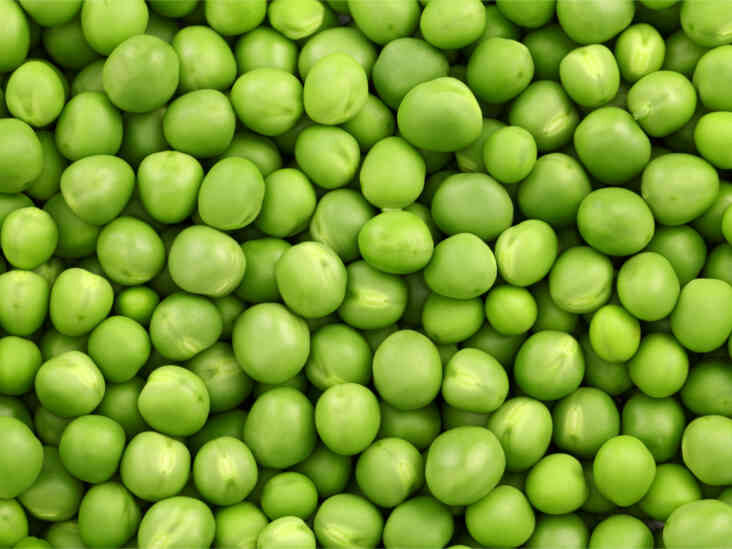

About Peas
The pea is most commonly the small spherical seed or the seed-pod of the pod fruit Pisum sativum.
Each pod contains several peas, which can be green or yellow. Botanically, pea pods are
fruit,[2] since they contain seeds and develop from the ovary of a (pea) flower. The name is
also used to describe other edible seeds from the Fabaceae such as the pigeon pea (Cajanus
cajan), the cowpea (Vigna unguiculata), and the seeds from several species of Lathyrus.
Peas are annual plants, with a life cycle of one year. They are a cool-season crop grown in many
parts of the world; planting can take place from winter to early summer depending on location.
The average pea weighs between 0.1 and 0.36 gram.[3] The immature peas (and in snow peas the
tender pod as well) are used as a vegetable, fresh, or canned; varieties of the species
typically called field peas are grown to produce dry peas like the split pea shelled from a
matured pod. These are the basis of pease porridge and pea soup, staples of medieval cuisine; in
Europe, consuming fresh immature green peas was an innovation of early modern cuisine.
Condition to grow Potato :-
-
Type of soil require
Cultivation can be done on several soil types. Well drained loam soil with a pH level of 6
to 7.5 is optimum for farming of peas. Peas cultivation cannot thrive in water logged areas.
Liming is to be done for acidic soil type.
-
Climate
For pea cultivation, temperature should range between 15 degree to 30 degree Celsius.
Optimum rainfall range is between 400 to 500 mm. While harvesting, the temperature should
range between 15 to 20 degree Celsius and sowing temperature should range between 25 to 30
degree Celsius.
-
Irrigation
Irrigation is required before sowing of seeds for better germination. There is no need for
pre sowing irrigation in case soil has enough moisture in it. Once sowing is over, it
requires a couple of more times of irrigation. 1st spray is applied before flowering and 2nd
is spayed at the pod formation time. Do not water heavily as it can lead to reduction in
total yield.
-
Manuring & Fertilization
Urea and SSP requirement per acre of land is 45 kilos and 155 kilos. And potash requirements
will be on soil results.
Nitrogen and Phosphorus requirement per acre of land is 20 kilos and 25 kilos.
While sowing, apply 20kg Nitrogen in form of 50kg Urea and 25kg Phosphorus in form of 150kg
Superphosphate per acre. Provide dosage of fertilizer alongside the rows.